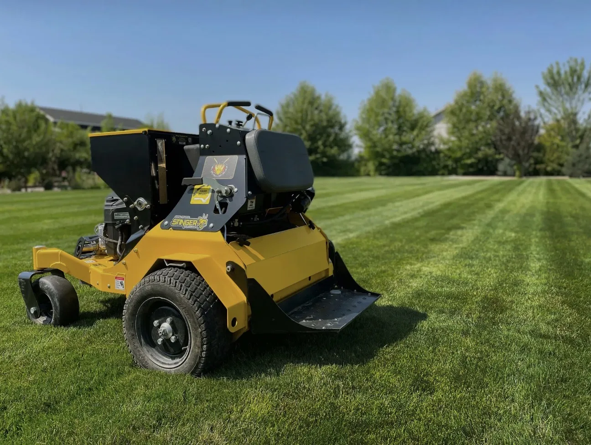
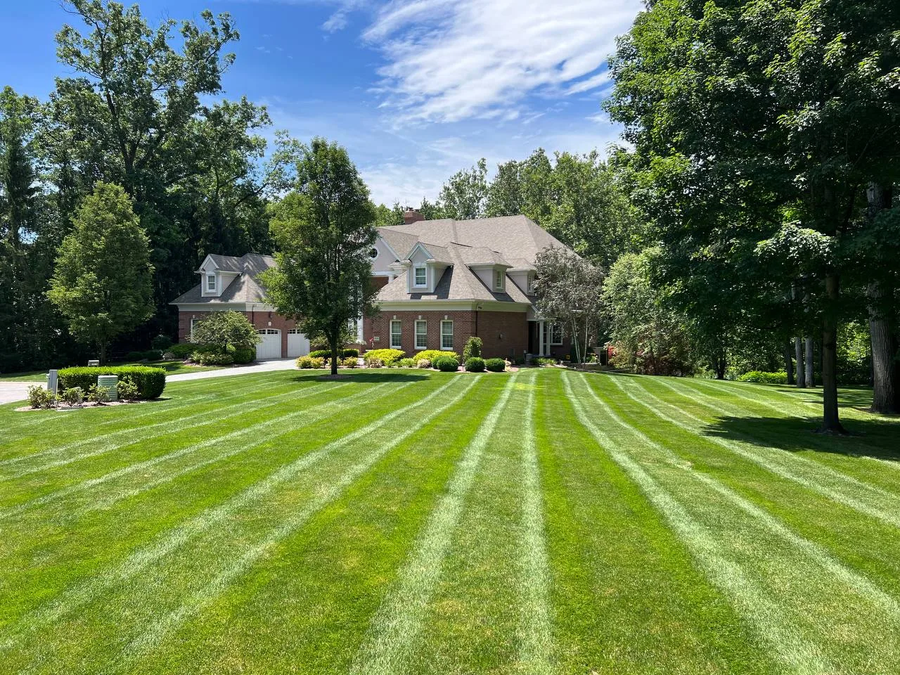
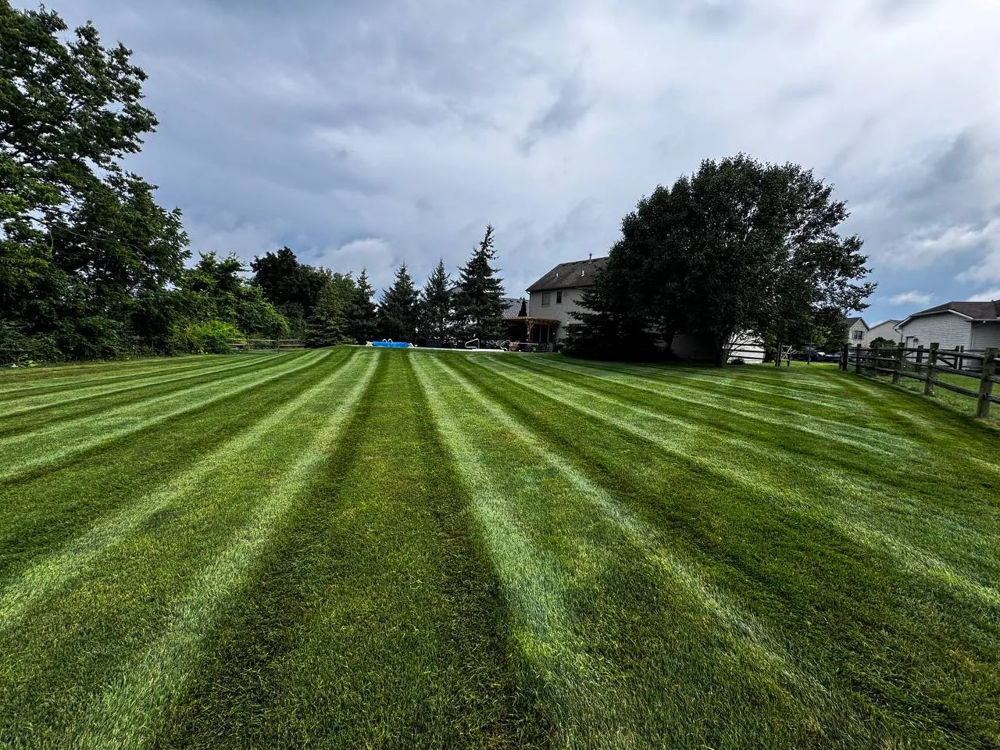
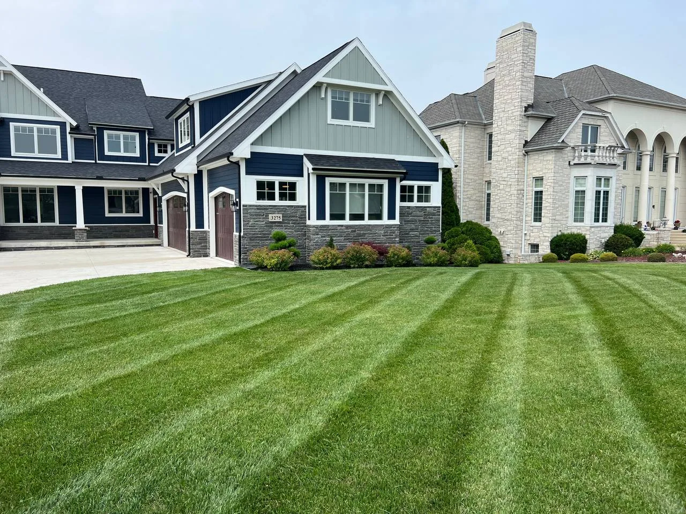
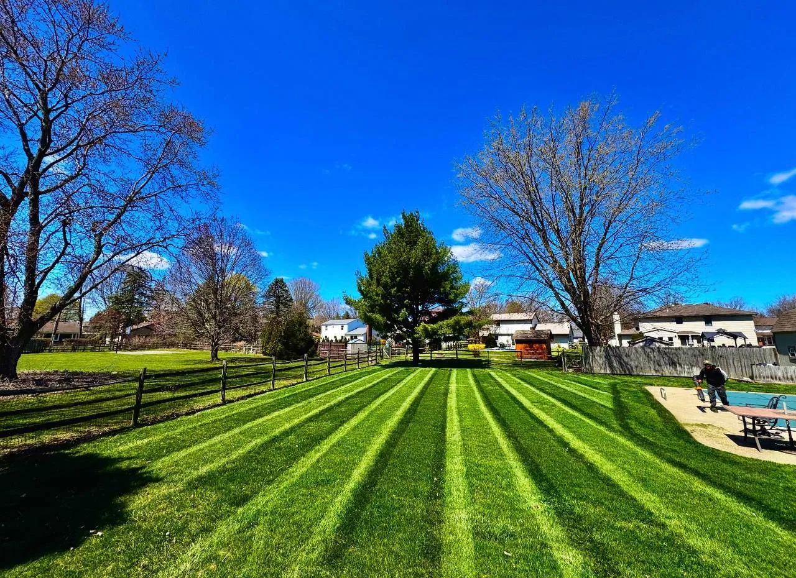
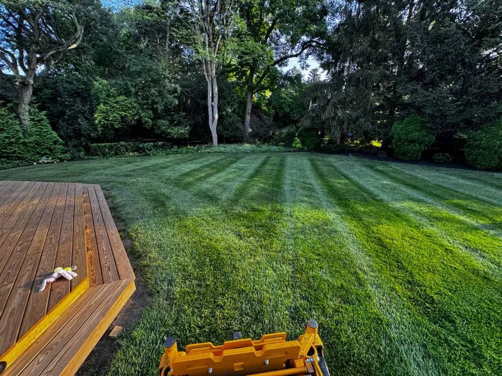
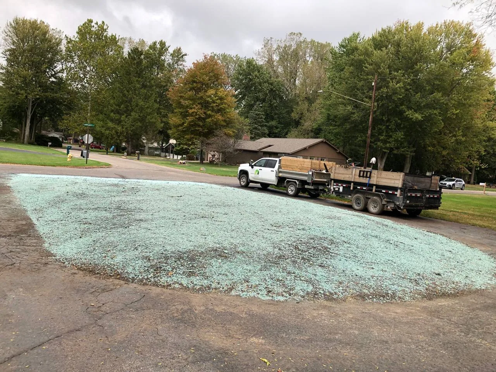
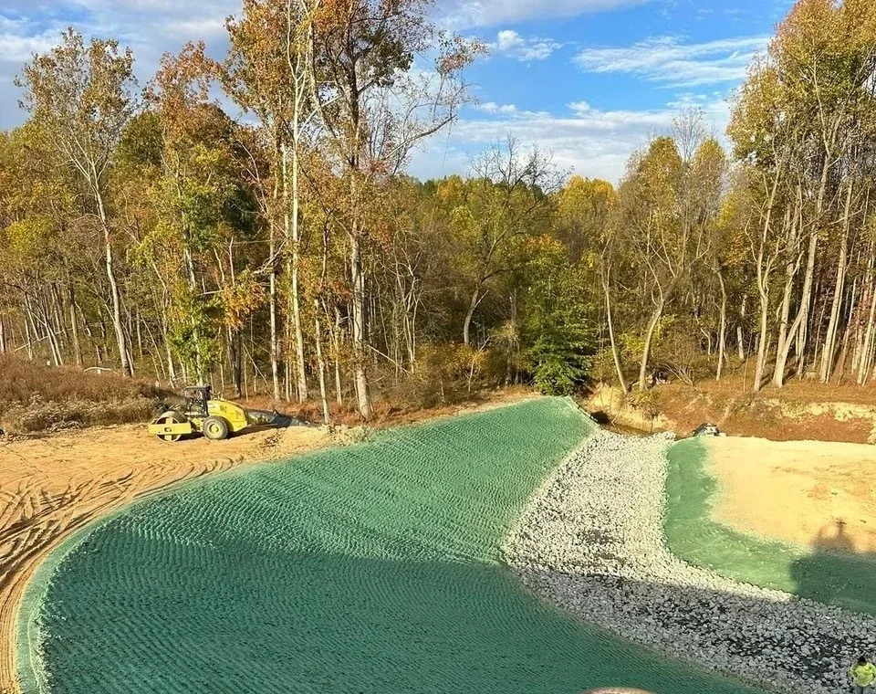

★★★★★
“Ty and his team put hydro mulch down in my front yard and they did an excellent job. The grass is looking awesome! Thanks guys.”Derrick Fawley

Home / Lawn Maintenance / Aeration & Overseeding
Core aeration and overseeding
Core aeration pulls plugs out of compacted soil so air, water, and seed can get in. Overseeding right behind it fills thin and bare areas with new grass. Terramorph does both in one visit for lawns in Perrysburg, Toledo, Maumee, and across Wood and Lucas County. Free estimates.
4.9★★★★★220+ Google reviewsGreat work at a fair price. They did what they said they were going to do, when they said they would do it.Richard Hansen
A lot of companies tell you what they are going to do. This company far exceeded their word.jon mercurio
Attention to detail was 2nd to none!Adam Raider
They did an excellent job and completed the same day. I would highly recommend them.Teresa Thompson
10/10 Company, the boys made my house look great. Customer Service is great, best deal on the market.Alejandro Urrea
Great work very accommodating and extremely professional will definitely have them do all my future work.Pete Detgen
Great, professional group of guys!Josh Johnson
They did a fantastic job for me. I will recommend them to colleagues.Dominic Urquiola
Fast and reliable. Ty did excellent work and very reasonable cost. I would not hesitate to suggest him to others.Larry Calcamuggio
Amazing service every time and prompt to all appointments.CJ Miller
Sound familiar?
What you get

01Why lawns here need it
Most of Wood and Lucas County sits on old lakebed clay, the same ground that was once the Great Black Swamp. Clay particles are tiny and flat. Foot traffic, mowers, kids, dogs, and construction equipment press them together until there is almost no space left for air or water.
Grass roots stop where the soil gets tight. A compacted lawn has shallow roots, so it thins out, browns early in summer, and lets weeds move into the open spots. More fertilizer or seed spread on top does not fix it, because neither one gets into the soil.

02What core aeration is
A core aerator drives hollow tines into the ground and pulls out plugs of soil a couple of inches long. Those holes give roots, water, and air a way down, and the soil around them loosens as it expands into the space.
The plugs are left on the lawn on purpose. They break down over a couple of weeks of rain and mowing and put soil back on top of the thatch layer, which helps it decompose. Spike aerators and spiked shoes do not remove anything. They push soil sideways and can pack the sides of the hole tighter.

03Overseeding
Grass seed has to touch soil to grow. Seed thrown onto an established lawn mostly lands on thatch and dries out. Seed spread right after core aeration falls into the holes and onto loosened soil, where it stays damp and roots quickly.
The seed is matched to the lawn. Kentucky bluegrass and perennial ryegrass suit open, sunny lawns. Tall fescue handles heat, wear, and clay. Fine fescue is the one that tolerates shade under mature trees. Bare ground left by grading or new construction is a different job, and that gets seeded or hydroseeded from scratch.
Timing
Late August through October is the best seeding window of the year here. The soil is still warm from summer, the nights are cool, fall rain does part of the watering, and summer weeds are fading instead of sprouting.
Earlier in that window is better. New grass needs several weeks of growing weather before the ground turns cold, and the first frost at Toledo Express Airport arrives around October 24 in a typical year. Spring aeration can still help a compacted lawn, but seed put down in spring has to survive summer heat, and the crabgrass preventer many lawns get in spring stops grass seed from sprouting too.

05Aeration vs. dethatching
Thatch is the spongy brown layer of dead stems and roots between the green grass and the soil. A thin layer, under about half an inch, is normal and protects the soil. Dethatching, also called power raking, rips that layer out with spinning tines. It is hard on a lawn and only worth doing when the thatch is truly thick.
On local clay, compaction is the more common problem, and the two get confused because both make a lawn feel hard and look thin. To check, cut a small wedge of turf a few inches deep and look at it from the side. If the brown spongy layer is thinner than your finger, the lawn needs aeration, not dethatching. Send a photo of that wedge with an estimate request and we will tell you what we see.
What it costs
Terramorph prices each lawn after looking at it, and the estimate is free. We do not post a flat price because two lawns the same size can be very different jobs.
Lawn size is the biggest factor. Access matters next: gates, slopes, tight side yards, and obstacles slow the machine down. Then comes the seed, since a thin or half-bare lawn needs more of it than a decent lawn getting thickened, and shade blends cost differently than sun blends. Combining the visit with a fall cleanup or regular lawn maintenance can change the number too.

07After the visit
The first three weeks decide how much of the seed becomes grass. The surface has to stay damp, which usually means light watering once or twice a day until the seed sprouts, then deeper watering less often as the roots go down.
Stay off the new grass as much as you can. Mow again once the new grass reaches normal mowing height, with a sharp blade, and hold off on weed killers until the new grass has been mowed a few times. Keep fallen leaves from piling up on it.
How we work
Aeration and seeding happen in the same visit. What happens in the weeks after is mostly water and patience.
Soil, thin areas, shade, and how the lawn has been cut and watered.
Core aeration across the lawn, plugs left to break down and feed the soil.
Seed matched to your sun and shade, spread right after aeration so it lands in the holes.
Keep the seed damp until it sprouts. We tell you what to expect and when to mow again.
Recent work


Reviews
“Ty and his team put hydro mulch down in my front yard and they did an excellent job. The grass is looking awesome! Thanks guys.”Derrick Fawley
“The other day when they mowed my lawn not only did they do a great job removing the weeds from the cracks in my driveway, they also took the time to pick up my trash cans that had fallen over! They are quick, efficient, and very easy to work with.”Adam Schmidbauer
“We are absolutely thrilled with the work Brad and his team completed! They completely redesigned our flower beds, providing us with a potential layout drawing, guiding us in selecting the right flowers, and executing everything perfectly. Besides the excellent craftsmanship, Brad and his team are genuinely kind and considerate.”Kate Vallerand
Questions homeowners ask
Still wondering about something? Call 419-873-6801, 7 a.m. to 8 p.m.
Late August through October. The soil is still warm, the nights are cool, and fall rain helps new grass root before winter. Earlier in that window is better, because seedlings need several weeks of growing weather before the ground gets cold. Spring aeration is possible, but spring seeding runs into summer heat and crabgrass.
Clay is where it helps most. Much of Wood and Lucas County sits on heavy lakebed clay that packs down under foot traffic and mowers. Core aeration pulls plugs out of that packed layer so water, air, and seed can get into the soil instead of sitting on top of it.
Most lawns here need aeration, not dethatching. Thatch is the spongy layer of dead stems between the grass and the soil, and under about half an inch of it is normal. Dethatching is only worth doing when that layer is thicker. Compacted soil is the more common problem on local clay, and core aeration also helps thatch break down.
Lawn size is the biggest factor. After that it is access for the machine, how thin or bare the lawn is, how much seed it needs and what kind, and whether the visit is combined with other work. Terramorph looks at the lawn and gives a free estimate. No prices are quoted sight unseen.
It depends on the seed. Perennial ryegrass can be up in about a week, tall and fine fescue in one to two weeks, and Kentucky bluegrass in two to four weeks. The seed has to stay damp the whole time, so light, frequent watering matters more than anything else in those first weeks.
Mark sprinkler heads, invisible dog fence wire, and any shallow cable or lighting wire you know about. Mow the lawn at its normal height a day or two before. If the ground is very dry, watering the day before helps the tines pull deeper plugs.
Yes. A thick lawn that is only compacted can be aerated on its own. If the lawn is thin, patchy, or mostly older grass, seeding right after aeration is the better value because the seed falls into the holes and touches soil.
Terramorph aerates and overseeds lawns in Perrysburg, Toledo, Maumee, Sylvania, Rossford, Waterville, Whitehouse, Holland, Bowling Green, Oregon, and the rest of Wood and Lucas County, Ohio.
Terramorph at a glance
Terramorph LLC is a landscape design and build company based in Perrysburg, Ohio, founded by brothers Ty and Trent Lincoln. We handle lawn aeration and overseeding along with patios, drainage, landscape beds, lighting, lawn care, cleanups, and snow removal for homes and businesses across Wood and Lucas County. 4.9 stars from more than 220 Google reviews, BBB accredited, and estimates are free.
Keep reading
Free estimate
Free estimate
Send project details through the quote form, or call directly for urgent service questions and scheduling.
Call now or jump straight to the quote request form.